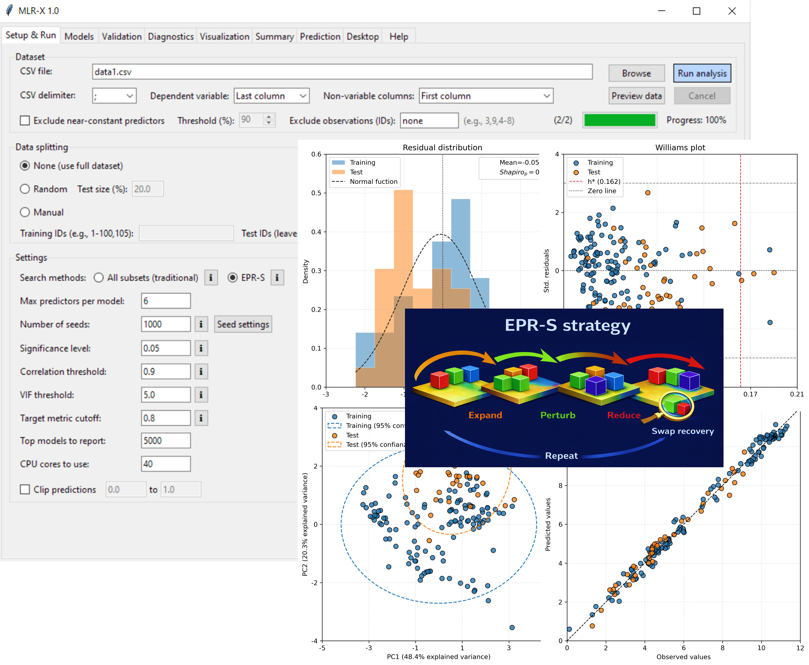

MLR-X 1.0. — Scalable multiple linear regression
MLR-X 1.0. — Scalable multiple linear regression
Cross-platform desktop and CLI tool to fit and diagnose multiple linear regression models on low- and high-dimensional data, with integrated validation and export-ready reports. Also available on PyPI.

Why choose MLR-X?
Portable binaries and Python packaged
Self-contained binaries for Linux, macOS, and Windows 10/11, plus a PyPI package (pip install mlr-x) for native Python environments.
GUI and CLI modes
GUI-only builds for quick exploration and GUI+CLI variants that keep the console open to run the full pipeline.
Work with high-dimensional data
Dimensionality reduction and variable selection pre-steps are not required thanks to a heuristic method (EPR-S).
Reproducibility and control
Reproducible EPR-S heuristic and exhaustive all-subsets search with multicollinearity control and significance-level constraints.
Robust validation and workflow
Robust internal and external validation, diagnostics, visualization, and summary exports synchronized across tabs.
Prediction block
AD-based interpolation/extrapolation flags, training-testing-prediction space visualization, and multi-model prediction in one block.
Install via PyPI
Install MLR-X directly from the Python Package Index (PyPI) for seamless integration into Python workflows.
pip install mlr-x
Official portable binaries
Ready-to-use standalone executables for desktop usage; no Python installation required.
MLR-X for Linux (GUI + CLI)
Single Ubuntu 20.04+ binary that launches the GUI by default and supports CLI runs.
Linux (GUI + CLI)MLR-X for macOS
Arm64 app bundles; choose GUI-only or the GUI+CLI build that opens a terminal.
MLR-X for Windows
Portable executables for GUI-only use or combined GUI+CLI workflows.
Project resources
How to cite
If you use this software, please cite:
Alcázar, Jackson J. (2026). "MLR-X 1.0 software. Available at: https://jacksonalcazar.github.io/MLR-X/".